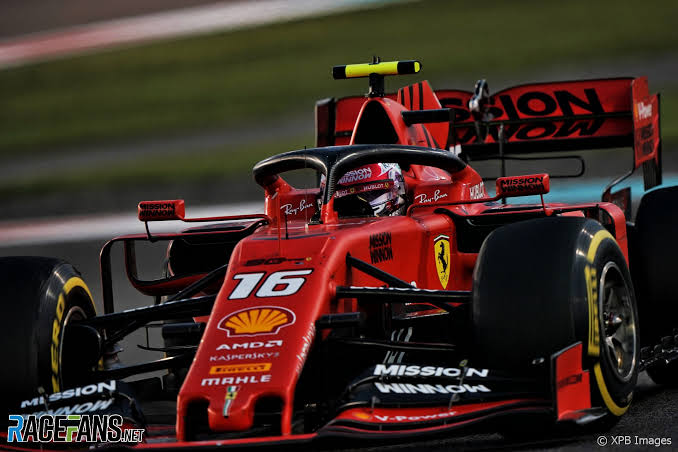

Charles Leclerc — автогонщик из Монако, известный своей скоростью и дерзостью на трассе. Любим фанатами за чистую атаку и смелые обгоны.
Он быстро прошёл путь через молодёжные серии и закрепился в мировых гонках. Сильные стороны:
"Я стараюсь каждый круг быть быстрее, чем вчера."
— мотивирующие слова гонщика
Хоть он и серьёзен на трассе, в гараже бывает шутником и любит болельщиков. Фанаты ценят не только результат, но и характер.
Если хочешь узнать больше — читай вики про Charles Leclerc.
Старая шутка: "он — просто симуляторный игрок"
На деле — реальный гонщик с реальными победами.
Создано с любовью и небольшим ленивусом максимус — ты знаешь, кто.